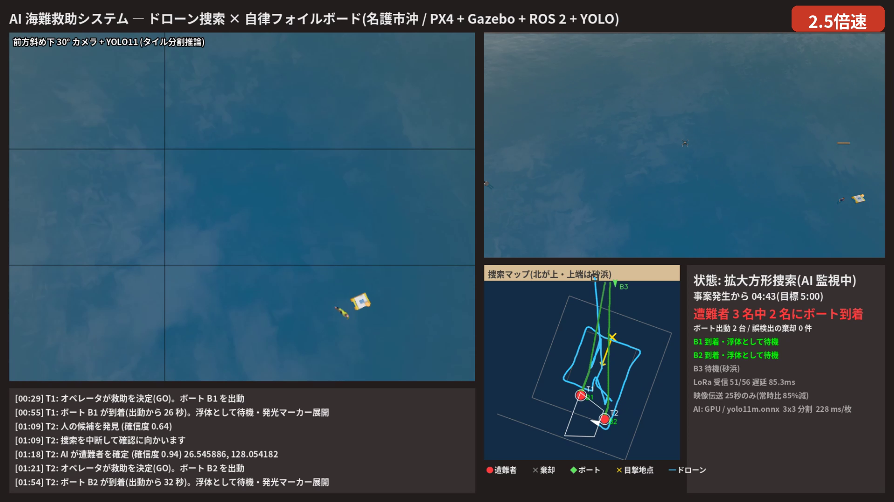
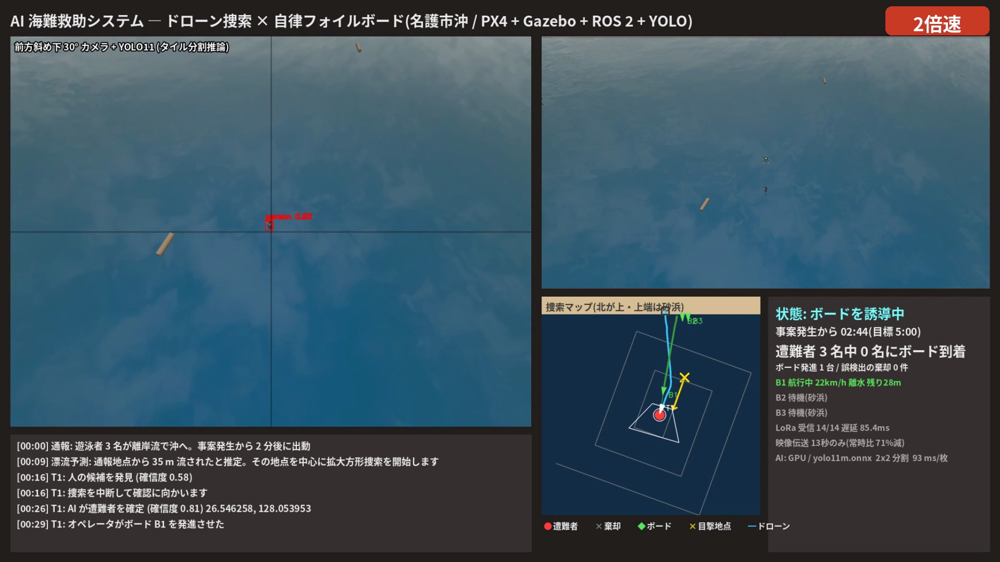
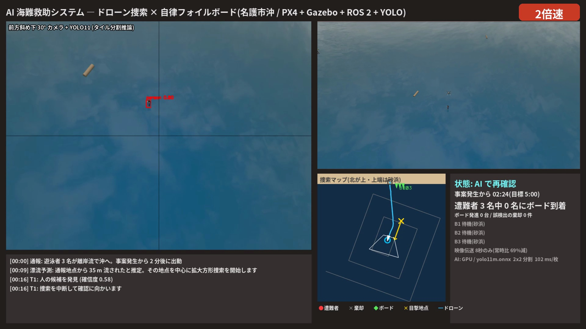
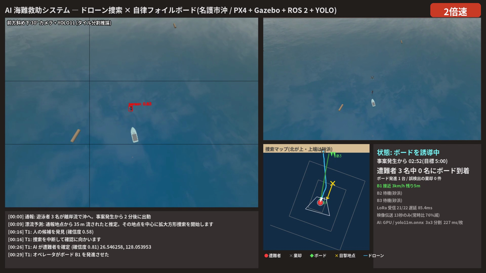
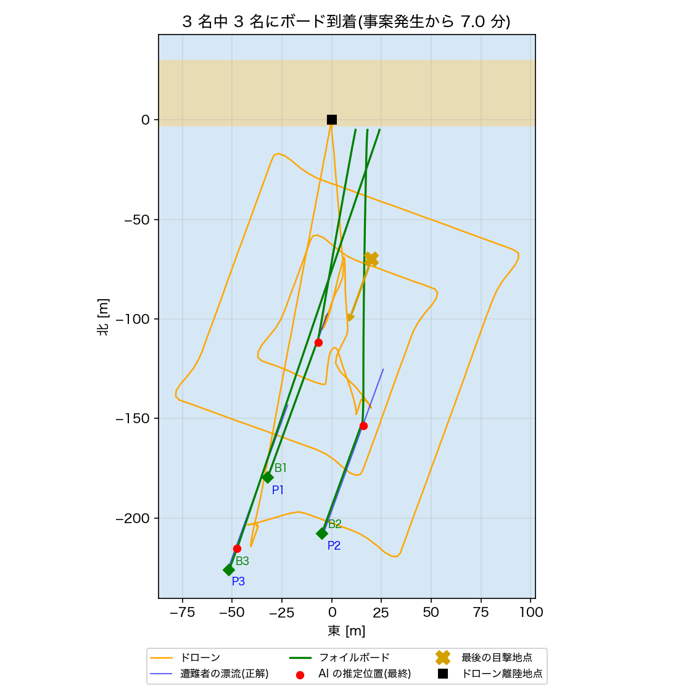

解説資料:AI 海難救助システム
レポート編(説明資料の詳しい解説)
Physical AI 応用講座1 最終課題の付録 ／ omnicampus アカウント: ba2vwbus ／ 2026 年 10 月 ／ コード: GitHub ba2vwbus13/pai-ai-sea-rescue-board
この資料について
提出した説明資料(5 ページ)は、要点だけを短く書いた。この解説資料は、その中身を図と表で詳しく説明したものである。何を想定し、どう作り、どんな結果になったかを、数字の根拠まで追えるようにした。
プログラムの中身の解説は、別の資料「実装編」(解説資料_実装編.pdf、7〜14 章)にある。
目次
想定する海難事故
システム構成
捜索と救助の手法
実験結果
考察と今後の課題
使用した技術
用語の約束
この資料で使う言葉の意味を、次の表にまとめる。
用語 この資料での意味 mission(頭) ドローンの飛び方と救助の手順を決めるプログラム(mission_node.py) mission(頭)から出力した JSON ファイル mission が着陸したときに書き出す記録。実行時は results/mission_*.json、GitHub では results/board_run1〜3.json 事案発生から〜秒 遭難者が最後に目撃された時刻からの秒数。ドローンの出動(アーム)は 120 秒の時点とする 目的地 状態ごとに決まる「最終的に止まる場所」 仮の目標点 目的地へ向かって 0.1 秒ごとに少しずつ進む点。これを PX4 に送る。コードでは carrot 確信度 AI が「人である」とどれだけ思っているかを 0〜1 で表した数字 T 番号(T1, T2 …) mission が、見つけた候補に付けた通し番号。答案の側 P 番号(P1〜P3) ワールドを作るときに付けた、遭難者の名前。正解の側 B 番号(B1〜B3) フォイルボード 3 台の名前 正解位置 シミュレーションの中の、遭難者・ボード・発光マーカーの本当の位置。ドローンとボードには渡さず、評価にだけ使う 位置の表し方 ドローンの離陸地点(砂浜)を原点に、「北に何 m・東に何 m」の 2 つの数で表す。北と東がプラスなので、北 −145 m は南へ 145 m、東 −23 m は西へ 23 m である UNIX 時刻 1970 年 1 月 1 日から何秒たったかで表した時刻。2 つのファイルの時刻を合わせるのに使う
1 章 想定する海難事故
1.1 救助システムの役割
海水浴場で、遊泳者 3 名が離岸流に流された事故を想定した。ドローン 1 機と、無人で走るフォイルボード 3 台が協力して、人が海に入らずに遭難者のもとへ浮力のあるものを届ける。ロボットが行う仕事は 4 つである。
4 つの仕事と、それぞれの仕事が動画のどの場面で見えるかを、表 1-1 にまとめる。
陸の捜索と違い、海の救助には、次の 3 つの難しさがある。3 章の工夫は、この 3 つに対応している。
捜す場所が決まらない。 通報された目撃地点には、もう遭難者はいない。ドローンが出動するまでの間にも、海流で流されているからである。この難しさには、流された先を計算する漂流予測で対応した(3.1 節)。相手が動き続ける。 遭難者は、見つけたあとも流され続ける。そこで、遭難者の位置を「いつ、どこにいたか」の組で扱い、ボードは遭難者が流れていく先を狙って走るようにした(3.5 節、3.6 節)。見つけて終わりではない。 遭難者のもとへ、浮くものを届ける必要がある。そこで、オペレータの判断でフォイルボードを発進させ、遭難者の手前で止まるようにした(3.4〜3.6 節)。
表 1-1 ロボットの 4 つの仕事と、動画での見え方
仕事 担当 平たく言うと 動画のどこに出るか 捜す ドローン 「今ごろ、どこまで流されたか」を計算し、そこを中心に渦巻き状に飛んで海を見る 冒頭のログ「漂流予測: 通報地点から 35 m 流されたと推定」、地図の四角い渦巻き 見つける ドローン AI が人らしいものを見つけ、降りて近くからもう一度 AI で確かめる カメラ映像の赤い枠、「AI で再確認」の表示 知らせる ドローン・オペレータ オペレータがボードを発進させたあと、ドローンは遭難者の上空にとどまり、位置を毎秒 LoRa でボードへ送る 「オペレータがボード B1 を発進させる」、「状態: ボードを誘導中」 駆けつける フォイルボード 遭難者が流れていく先を予測して先回りし、手前 2 m で止まって浮き具の代わりになる 右上の 3D 画面のボード、地図の緑の線、オレンジの発光マーカー
1.2 事故の想定
場所は、沖縄県名護市の海水浴場である。砂浜は北側にあり、海は南側に広がる。位置は、砂浜に置いたドローンの離陸地点を原点として、「北に何 m・東に何 m」で表す(用語の約束)。水際には、無人のフォイルボードが 3 台待機している。
遊泳者 3 名が、離陸地点から南へ約 70 m、東へ約 20 m の辺りで泳いでいた。3 名はひとかたまりではなく、互いに 40〜50 m ほど離れていた。そこで離岸流 (岸から沖へ向かう強い流れ)に捕まり、沖へ流され始めた。
浜の監視員は 3 名が流されるのに気づいたが、見失った。監視員は、3 名を最後に見た辺りを目撃地点 として通報した。目撃地点は「3 名がこの辺りにいた」というおおよその場所 であり、一人ひとりの正確な位置ではない。
事故が起きてから救助が終わるまでの流れを、時刻の順に表 1-2 にまとめる。時刻は、事案発生からの経過時間で表す。0 秒が事案発生で、ドローンが砂浜から出動するのは 120 秒である。シミュレーションで動かすのは、120 秒から後の部分である。
この想定では、海流の速さと向き、遊泳者の人数、ボードの台数を決めた。それぞれの数字が何を意味するかを、表 1-3 に示す。
表 1-2 事故の時系列
時刻 出来事 0 秒 事案発生。監視員が 3 名を最後に見た時刻。この時点の 3 名のおおよその場所が目撃地点になる 0〜120 秒 通報し、ドローンの出動を準備する。その間も 3 名は流され続け、約 30 m 沖へ移る 120 秒 ドローンが砂浜から出動する(ここからがシミュレーションで動かす部分である) 120 秒〜 ドローンが捜して見つけ、オペレータがボードを発進させ、ボードが向かう。目標は、3 名全員のもとへ事案発生から 5 分(300 秒)以内 にボードを届けることである
表 1-3 想定の数字の読み方
数字 意味 海流 0.25 m/s 1 秒に 25 cm、1 分に 15 m 流される。離岸流と沿岸流を合わせた、やや速めの流れを想定した 方位 200° 海流が流れていく向き。方位は北を 0° として時計回りに数える。東が 90°、南が 180°、西が 270° である。200° は南から少し西で、沖へ向かう向きになる 遊泳者 3 名 立ち泳ぎの人が 2 名(P1・P3)、浮いている人が 1 名(P2)。立ち泳ぎの人は胸まで水中なので、上空からは体の一部しか見えない ボード 3 台 水際(南 5 m、東 12・18・24 m)で待機している。1 人に 1 台ずつ向かわせる
1.3 出動時に得られる情報
ドローンは、通報と海流の予報だけを頼りに捜し始める。3 名の位置は、だれも正確には知らない。
出動の時点でドローンがわかっていることと、わからないことを、表 1-4 の左右に分けて示す。左の列は、通報と海流の予報からわかることである。右の列は、ドローンが自分で捜して確かめなければならないことである。
シミュレーションの中では、プログラムは、遭難者の正解位置を知ろうと思えば知ることができる。しかし、その正解位置をドローンやボードの制御に使うと、答えを見ながら試験を解くのと同じになる。従って、正解位置は、評価のときだけ使うことにした。ドローンとボードは、表 1-4 の左の列の情報と、カメラと無線で得た情報だけで動く。評価のしかたは、3.7 節で説明する。
表 1-4 出動時にわかっていることと、わからないこと
わかっていること(通報・予報) わからないこと 目撃地点(南 70 m・東 20 m) 3 名それぞれが、今どこにいるか
1.4 捜索開始地点の考え方
出動した時点で、3 名はもう目撃地点にはいない。120 秒あまりの間に、海流で南南西へ流されているからである。そこでドローンは、次の順で捜す場所を決める(図 1-1)。
目撃地点 から出発する。わかっている位置はここだけである。「海流の速さ × 事案発生からの時間」だけ、海流の向きへずらす。捜索を始めるころには約 140 秒たっているので、0.25 × 140 = 35 m 南南西へずらす(計算は 3.1 節)。
ずらした点を捜索の中心 とする。3 名は目撃地点の周りにばらばらにいたので、流されたあとも、捜索の中心の周りにばらばらにいるはずである。
捜索の中心から、渦巻き状に外へ広げながら捜す(拡大方形捜索 )。いる可能性が高い中心の近くから先に見て、見つからなければ外へ広げていく。
図 1-1 は、この 4 つの手順を、縮尺どおりの地図に描いたものである。ドローンがわかっている位置は目撃地点だけなので、手順は目撃地点から始まる。
砂浜 海 北が上
離陸地点
ボード
① 目撃地点(通報)
点線の円:事案発生時に 3 名がいた
おおよその範囲。一人ひとりの位置は不明
② 海流で南南西へ
35 m 流された
③ 捜索の中心
赤い円:出動時に 3 名がいそうな範囲
④ 中心から外へ渦巻き状に捜す
灰色の点線:拡大方形捜索の最初の 4 本
(実際は 10 本。向きは簡略化した)
30 m
図 1-1 どこを捜すかを決める流れ
1.5 遭難者の正解位置と漂流
ここまでは、ドローンの立場から見た前提である。図 1-2 は、同じ地図の上に、シミュレーションの中の正解位置 (答え)を重ねたものである。ドローンは、赤い点や青い線を知らないまま捜している。
図 1-2 は縮尺どおりに描き、1 回目の実行の値を使った。点線の円・赤い点・青い点線は、シミュレーションの中の正解位置であり、ドローンはこれらを知らない。図の記号の意味は、図のあとの表 1-5 にまとめた。
図 1-2 からは、次のことがわかる。3 名とも、目撃地点から南南西へ、同じ向きに同じ距離だけ流されている。ドローンが出動した時点で、捜索の中心から各人までの距離は、P1 が 11.5 m、P2 が 29.4 m、P3 が 51.7 m だった。ドローンは捜索の中心の近くから順に捜すので、ふつうは、この距離が近い順に見つけることになる。実際に、1 回目と 2 回目は P1 → P2 → P3 の順に見つけた。ただし 3 回目は、P3 を P2 より先に見つけた。その理由は 4.2 節で説明する。一番遠い P3 は、渦巻きをかなり外まで広げてから見つかったので、救助に一番時間がかかった(4.4 節)。
砂浜(陸) 海
北が上
離陸地点(原点)
ボード B1〜B3(水際で待機)
目撃地点(通報) 南 70 m・東 20 m
P1 P2 P3
ボードが着いた所
捜索の中心(漂流を補正)
海流 0.25 m/s 方位 200°(南南西)
30 m
点線の円:事案発生時の位置 赤い点:出動時の位置 青い点線:その後の漂流
図 1-2 想定の地図と正解位置
表 1-5 図 1-2 の記号の意味
記号 意味 ドローンは 灰色の四角(砂浜) ドローンの離陸地点。位置の原点 知っている 緑の小さな四角(水際) ボード B1〜B3 の待機位置 知っている オレンジの × 目撃地点(通報された位置) 知っている オレンジの ○ 捜索の中心。目撃地点を海流の分だけずらした点(1.4 節) 自分で計算した 赤い点線の円 事案発生時の、3 名の正解位置 知らない 赤い点 P1〜P3 ドローンが出動したときの、3 名の正解位置 知らない 青い点線 出動後の、3 名の正解の漂流経路 知らない 緑の四角(沖) ボードが遭難者のもとに着いた所 結果
1.6 遭難者の配置と漂流開始時刻
3 名の散らばりは、事案発生時の各遭難者の位置のずれだけで作った。そのあとは、全員が同じ海流で、同じ向き・同じ速さで流される。
事案発生時の各遭難者の位置を、表 1-6 に示す。各遭難者の位置は、目撃地点から北と東に何 m ずれているかで表した。この値は、worlds/make_world.py の PERSONS に書いてある。表の右端の列は、ドローンが出動したときの、捜索の中心から各人までの距離である。
P3 はあえて遠くに置いた。捜索の中心から 50 m 以上離れているので、拡大方形捜索を外側まで進めないと見つからない。漂流予測と拡大方形捜索が本当に役に立つかを試すためである。
表 1-6 事案発生時の各遭難者の位置
人 姿勢 北 東 出動時の捜索の中心からの距離 P1 立ち泳ぎ +6 m −10 m 11.5 m P2 浮いている −22 m +18 m 29.4 m P3 立ち泳ぎ −40 m −30 m 51.7 m
出動までの待ち時間の影響
Gazebo のワールドは、遭難者を「事案発生から 120 秒後の位置」に置いて始まる。そして、Gazebo を起動した瞬間から流れ始める 。ところが、ドローンが出動するのは、Gazebo の起動・PX4 の準備・AI の起動が済んでからである。その待ち時間の分だけ、遭難者は想定より先へ流れている。
図 1-3 は、想定の時計と、シミュレーションの時計を並べたものである。Gazebo の起動から出動までの約 28 秒は、想定の 120 秒に含まれていない。
3 回の実行で、出動時の遭難者は、ワールドを作ったときの位置から 7.0〜7.3 m 流れていた。0.25 m/s で割ると 28〜29 秒である。この待ち時間が長すぎると、3 人目が捜索範囲から外れてしまう。実際に起きたこの失敗は、4.6 節で説明する。
想定:事案発生 → 出動まで 120 秒
約 28 秒
Gazebo 起動
出動(アーム)
遭難者は 120 + 約 28 = 約 148 秒分流れている。ドローンの漂流予測と評価は「出動 = 事案発生から 120 秒」として計算する
→ 遭難者は予測より約 7 m 先にいる。これは捜索する側に不利な方向のずれである
図 1-3 シミュレーションの時計
2 章 システム構成
1 章では、どんな事故を想定し、ドローンが何を手がかりに捜し始めるかを述べた。この章では、それを実行するシステムの組み立てを説明する。まず全体像を 1 枚の図で示し(2.1)、次にプログラムごとの役割とデータの流れ(2.2、2.3)、実機での置き場所(2.4)、実際に動かしたときの流れ(2.5、2.6)の順に見ていく。
2.1 システム全体構成
このシステムは、既製のソフト 2 つ(Gazebo と PX4)と、今回作ったプログラムでできている。図 2-1 は、どのプログラムがどれとつながり、何を受け渡しているかを 1 枚にまとめたものである。この章の残りの節は、この図の部分ごとの説明である。
図 2-1 の青い点線の枠の中にあるのが、ROS 2 のノードであり、ノード同士はトピックでつながる。PX4 は ROS 2 のノードではないので、紫の点線で描いた Micro XRCE-DDS を通して、ROS 2 とやりとりする。Gazebo とのやりとりには、橙の線で描いた gz-transport を使う。図の各部分の見方は、図のあとの表 2-1 にまとめた。
Gazebo と ROS 2 の間のデータは、gz-transport と ROS 2(DDS)の両方の通信を使えるプログラムが受け渡す (図 2-2)。Gazebo の中のデータは gz-transport で流れ、ROS 2 のノードの間のデータは DDS で流れる。間に入るプログラムは、片方の通信で受け取ったデータを、もう片方の通信で送り出す。
カメラ画像は、image_bridge が Gazebo から gz-transport で受け取り、ROS 2 のトピック /world/…/image として送り出す。detector は、このトピックから画像を受け取る。
ボードの位置は、board が決める。board は、ROS 2 のトピック /rescue/lora/rx で遭難者の座標を受け取り、ボードの動きを計算して、gz-transport の set_pose で Gazebo のボードを動かす。
ドローンの飛行では、PX4 が 2 つの相手とやりとりする。Gazebo とは、gz-transport(gz_bridge)で、センサーの値とモーターの回転数をやりとりする。ROS 2 とは、Micro XRCE-DDS で MicroXRCEAgent を通して、機体の位置や飛行の指令のトピックをやりとりする。
遭難者とボードの正解位置は、truth_logger が Gazebo から gz-transport で受け取り、評価用のファイルに書き出す。
図 2-2 では、箱の左右に付けた色付きの四角で、そのプログラムが使う通信を表した。橙は gz-transport、青は ROS 2、紫は Micro XRCE-DDS である。image_bridge と board は橙と青の両方を持つので、Gazebo と ROS 2 の間でデータを受け渡すことができる。PX4 は、橙で Gazebo とつながり、紫で MicroXRCEAgent とつながる。MicroXRCEAgent は、青で ROS 2 とつながる。truth_logger は、橙で受け取った正解位置をファイルに書く。
図 2-2 の 4 つのプログラムについて、Gazebo との通信、ROS 2 との通信、受け渡すものを、表 2-2 に 1 行ずつまとめる。
ROS 2 Humble(DDS)
Gazebo
世界・物理計算
カメラ・センサー
遭難者を流す
truth_logger 評価専用
PX4 SITL(手足)
gz_bridge
uORB(PX4 の中の通信)
uxrce_dds_client
MicroXRCEAgent PX4 の代わりに ROS 2 のトピックを 流す・聞く
image_bridge
detector
dashboard
mission
lora_link
board
UDP 8888
画像
センサー ↓ モーター ↑
board がボードを置き直す(set_pose)
姿勢・位置
/fmu/out/…
/fmu/in/…
状態
座標
遅れ・欠落
到着など
ROS 2(DDS)のトピック
Micro XRCE-DDS
gz-transport
図 2-1 システムの全体像
表 2-1 図 2-1 の見方
場所 何があるか 詳しくは 左上の Gazebo 海・遭難者・ドローン・ボードがある仮想の世界。カメラ画像とセンサーの値を作る 1 章、6 章 左下の PX4 ドローンの飛行制御。言われた地点へ安定して飛ぶだけで、どこへ行くかは考えない 実装編 8 章 青い点線の枠 今回作った ROS 2 のプログラム。detector(目)・mission(頭)・lora_link(無線)・board(ボード)・dashboard(表示) 2.2 節、2.3 節 MicroXRCEAgent PX4 の代わりに ROS 2 のトピックを流したり聞いたりする窓口。PX4 は ROS 2 に直接参加できないので、これを通す 6 章、実装編 8.1 節 truth_logger 評価のために正解位置を記録するだけのプログラム。どのプログラムにも情報を渡さない 3.7 節 線の色 青は ROS 2 のトピック、紫の点線は Micro XRCE-DDS、橙は Gazebo 専用の通信(gz-transport) 6 章
Gazebo の世界 通信:gz-transport
ROS 2 の世界 通信:DDS
間に入るプログラム(箱の左右の四角:使う通信)
image_bridge 画像の形を変えて流し直す
カメラ画像 /world/…/image
board 座標から、ボードの動きを計算
/rescue/lora/rx set_pose
PX4 飛行制御
Agent PX4 の窓口
センサー モーター
/fmu/out/… /fmu/in/…
gz_bridge UDP
truth_logger 正解位置を記録(評価専用)
正解位置
評価用の ファイル
gz-transport ROS 2(DDS) Micro XRCE-DDS
図 2-2 Gazebo と ROS 2 の間の受け渡し
表 2-2 Gazebo と ROS 2 の間に入るプログラム
プログラム Gazebo との通信 ROS 2 との通信 受け渡すもの image_bridge gz-transport DDS カメラ画像を、Gazebo から ROS 2 へ。変換だけをする既製のノード(ros_gz パッケージ) board gz-transport DDS ROS 2 で受け取った座標から計算したボードの位置を、Gazebo へ。1 つのプログラムの中で 2 つの通信のライブラリを使う PX4 gz-transport(gz_bridge) Micro XRCE-DDS → MicroXRCEAgent → DDS Gazebo とはセンサーの値とモーターの回転数。ROS 2 とは機体の位置・姿勢と、飛行の指令 truth_logger gz-transport (使わない。記録はファイルへ) 遭難者とボードの正解位置を、評価用のファイル truth_*.jsonl へ
2.2 各プログラムの役割
図 2-1 に出てきたプログラムのうち、救助の流れに直接かかわる 6 つの役割を表 2-3 にまとめる。今回作ったのは detector・mission・lora_link・board と、表示画面(dashboard)である。PX4 と Gazebo は既製のソフトである。PX4 は「どこへ行くか」を考えない。言われた地点へ安定して飛ぶことだけを受け持つ。
表 2-3 プログラムの役割
プログラム たとえ 受け取るもの 渡すもの 頻度 Gazebo 世界 モーターの回転、ボードの位置 カメラ画像、機体の位置・傾き 常に計算 detector 目 カメラ画像、機体の位置・傾き 「人がいる、確信度 0.8、位置は北 −145 m・東 −23 m、時刻は〜」 1 秒に 1 回 mission 頭 遭難者の位置、機体の位置、ボードの状態 仮の目標点(PX4 へ)、遭難者の座標(LoRa へ) 1 秒に 10 回 PX4 手足 仮の目標点 モーターの回転 常に制御 lora_link 無線 mission が送った座標 遅らせ、ときどき捨ててから、ボードへ渡す 届くたび board ボード LoRa で届いた座標 ボード 3 台の位置(Gazebo へ)、状態(mission へ) 1 秒に 20 回
データの流れと周期
図 2-1 は「どのプログラムがどれとつながっているか」を示した。図 2-3 は、同じプログラムの間を、データがどの順番で、どれくらいの間隔で 流れるかを示す。横に並んだ縦線が各プログラムで、時間は上から下へ進む。矢印に書いた値は、1 回目の実行で T1(P1)を見守ったときのものである。
図 2-3 の青い矢印は ROS 2、紫の点線は Micro XRCE-DDS、橙の矢印は gz-transport である。画像 → 検出 → 予測 → 飛行の指令の流れは、0.1〜1 秒ごとに繰り返す。予測 → LoRa → ボードの流れは、1 秒ごとに繰り返す。ボードが止まると、mission は次の人の捜索に戻る。
図 2-3 の区間ごとに、データが流れる間隔と、かかる時間や遅れを、表 2-4 にまとめる。
Gazebo
detector
mission
PX4
lora_link
board
カメラ画像 1280×960
一番新しい 1 枚を
1 秒に 1 回 YOLO
約 230 ms
人・確信度 0.81
北 −111.8 m・東 −6.7 m
写真を受け取った時刻
予測位置 =
位置 + 海流
× 経過時間
仮の目標点
1 秒に 10 回
モーターの回転数
推定位置・時刻・海流
1 秒に 1 回・24 バイト
61.7 + 20 ms 待つ
3% は捨てる
約 86 ms 遅れて届く
0.05 秒ごとに先回り
ボードの位置を置き直す(set_pose)
止まった(HOLD)を知らせる
図 2-3 データが流れる順番
表 2-4 図 2-3 の間隔と遅れのまとめ
区間 間隔 かかる時間・遅れ カメラ → detector 1 秒に 30 枚 detector は一番新しい 1 枚だけを取っておく detector の推論 1 秒に 1 回 3×3 分割で約 230 ms mission → PX4 1 秒に 10 回 同じ PC の中なので、ほぼ遅れない mission → lora_link → board 1 秒に 1 回 平均約 86 ms 遅れる。100 回に 3 回は届かない board の計算 1 秒に 20 回 届いた最新の遭難者の位置から、遭難者の今の位置を予測し続ける
2.3 補助プログラム
救助の流れには直接かかわらないが、システムの中で動いているプログラムが 3 つある。表 2-5 に、その役割をまとめる。
表 2-5 の dashboard が表示する画面を、図 2-4 に示す。図 2-4 は、3 回目の実行の、事案発生から 6 分 55 秒の画面である。左上はドローンのカメラの映像で、AI が人と判定した所に赤い枠を付けている。右上は Gazebo の 3D 画面で、B3 が 3 人目へ向かっている。右下は捜索マップと状態、左下は出来事の記録である。
表 2-5 中心の流れの外にあるプログラム
プログラム 役割 補足 dashboard 表示画面 動画の画面(図 2-4)。情報を集めて表示するだけで、飛行にも救助にも影響しない truth_logger 評価用の記録係 Gazebo から、遭難者とボードの正解位置を 0.5 秒ごとに記録する。mission にも board にも渡さないので、止めても動きは変わらない。評価ができなくなるだけである image_bridge 画像の受け渡し Gazebo のカメラ画像を、ROS 2 で受け取れる形に変えて流す。既製品

図 2-4 dashboard の画面 2.4 実機におけるプログラムの配置
シミュレーションでは、すべてのプログラムが 1 台の PC で動いている。実機にするなら、次のように分けることを想定している。
図 2-5 に、ドローン・地上・フォイルボードの 3 か所に分けた置き場所を示す。ドローンには、detector と mission を動かす機上コンピュータと、PX4 を載せる。地上には、オペレータが映像を見て判断するための PC を置く。フォイルボードには、board の誘導と制御の部分と、LoRa の受信機を載せる。
シミュレーションでは、地上のオペレータの判断も、mission の中で「3 秒後に自動でボードを発進させる」として代用している。
mission をドローンに載せる理由は、次の 3 つである。
PX4 には、飛ぶ位置の指令を 1 秒に 10 回送る必要がある。この指令を地上から携帯回線で送ると、0.1〜0.3 秒の遅れと揺らぎが、そのまま飛行に影響する。さらに、PX4 は指令が約 1 秒途切れると安全動作に入るので、その時点で救助が止まってしまう。
海の上では、地上との通信が途切れることがある。通信が途切れても捜索・確認・見守りを続けられるように、判断はドローンの機上で行う。
ボードへの座標は、上空のドローンから送るのがよい。高度 12 m のドローンからは、海上のボードまで見通しがよく、LoRa の電波が届きやすいからである。
地上に置くのは、人の判断(ボードの発進・誤検出の棄却・中止)と表示だけである。地上からドローンへ送るのは数十バイトの指令なので、テレメトリの回線で足りる。映像の送り方は 5.2 節で扱う。
ドローン
機上コンピュータ:detector・mission
フライトコントローラ:PX4
カメラ、LoRa 無線機
映像伝送の送信機
地上(砂浜の監視所)
オペレータの PC:dashboard
映像の受信機
ボードを発進させるボタン
フォイルボード(3 台それぞれ)
board の誘導・操縦の部分
LoRa 受信機、GNSS、発光マーカー
映像
発進
LoRa:毎秒の位置の更新
ボードの発進
図 2-5 実機での置き場所の想定
2.5 mission の状態遷移の実例
ここまでのプログラムが、1.2 節の事故に対して実際にどう動いたかを、1 回目の実行(デモ動画と同じ回)の記録で追う。mission は「今、何をしているか」の段階(状態)を切り替えながら動く。時刻は事案発生からの秒数で、ドローンの出動は 120 秒である。
表 2-6 は、1 回目の実行で mission が切り替えた状態を、時刻の順に並べたものである。この表は、mission が出力した JSON ファイルの events の記録から作った。
表 2-6 の見守りの状態が、実際の画面でどう見えるかを、図 2-6 に示す。図 2-6 は、3 回目の実行の、事案発生から 2 分 45 秒の画面である。ドローンは、T1 を画面の中央に捉えたまま、上空にとどまっている。右下の状態欄には、「B1 接近 17 km/h 離水 残り 21 m」「LoRa 受信 12/15」と出ている。
表 2-6 1 回目の実行の流れ
時刻 状態 何が起きたか 120 秒 離陸 砂浜から高度 18 m へ上昇 130 秒 漂流予測 → 捜索基点へ移動 「35 m 流された」と計算し、捜索の中心へ向かう 137 秒 発見 → 候補へ移動 移動中に AI が T1 を見つける(確信度 0.58) 137〜146 秒 降下して確認・AI で再確認 高度 10 m に降りて、AI でもう一度判定する 146 秒 確定 → オペレータ T1 を遭難者と確定(確信度 0.81)。映像を地上へ送る 150 秒 ボードの発進 → 見守り オペレータが B1 を発進させる。ドローンは高度 12 m で T1 を見守り、位置を毎秒送る 175 秒 到着 → 上昇 → 捜索へ復帰 B1 が T1 の手前に到着(航行 26 秒)。ドローンは捜索を中断した地点へ戻る 189〜234 秒 T2 も同じ流れ 発見 189 秒、確定 198 秒、発進 201 秒、B2 到着 234 秒(航行 32 秒) 234〜361 秒 拡大方形捜索 外側へ広げながら 3 人目を捜す 361〜417 秒 T3 も同じ流れ 発見 361 秒、確定 370 秒、発進 373 秒、B3 到着 417 秒(航行 44 秒) 419 秒 帰還 3 名全員にボードが着いたので、捜索を打ち切る 463 秒 着陸 JSON ファイルを書き出して終了

図 2-6 見守り(ESCORT)の場面 2.6 目的地と仮の目標点の決定方法
mission は 0.1 秒ごとに、次の 3 段階で PX4 への指示を作っている。
今の状態に応じて目的地 を選ぶ(表 2-7)
人に関わる状態では、人の予測位置 から目的地を計算する(3.5 節)
目的地をいきなり送らず、そこへ向かって少しずつ進む仮の目標点 を作って PX4 に送る
人に近づくとき、目的地を人の真上ではなく手前 にしているのは、カメラが真下ではなく前方斜め下 30° を向いているからである。真上に行くと、人がカメラの画面から外れる。人が画面の真ん中に写る位置は、人から「高度 × tan 30°」だけ手前になる。高度 18 m なら 10.4 m、10 m なら 5.8 m、12 m なら 6.9 m である。
図 2-7 は、確認と見守りのときの目的地を、横から縮尺どおりに描いたものである。オレンジの点線はカメラの中心の向きであり、どの目的地でも、人が画面の真ん中に写ることがわかる。
mission は、PX4 に目的地をそのまま送らず、仮の目標点 を送る。目的地が 100 m 先にあるときに、その地点をそのまま PX4 に送ると、PX4 は全力で加速してしまうからである。そこで mission は、目的地へ向かって一定の速さで進む点を作り、0.1 秒ごとに PX4 に送る。たとえば捜索中は、この点を 0.1 秒に 0.7 m ずつ進めるので、ドローンは秒速 7 m で飛ぶ。詳しくは実装編 8.4 節で説明する。
確認と見守りの間、目的地は遭難者の予測位置と一緒に、海流で 1 秒に 0.25 m ずつ動く。そのため、止まっているように見えるドローンも、人と一緒にゆっくり南南西へずれていく。
表 2-7 状態ごとの目的地
状態 目的地(水平の位置) 高度 速さ 離陸 離陸地点の真上 18 m 上下 3 m/秒 捜索基点へ移動 漂流を補正した捜索の中心 18 m 10 m/秒 拡大方形捜索 捜索経路の次の曲がり角 18 m 7 m/秒 A 候補へ移動 遭難者の予測位置の手前 10.4 m 18 m 10 m/秒 B 降下して確認・AI で再確認・オペレータ 遭難者の予測位置の手前 5.8 m 10 m 7 m/秒 C 見守り 遭難者の予測位置の手前 6.9 m 12 m 4 m/秒 上昇 今いる場所の真上 18 m 上下 3 m/秒 捜索へ復帰 捜索を中断した地点 18 m 10 m/秒 帰還 離陸地点 18 m 10 m/秒
海面
人
A 候補へ移動(高度 18 m)
C 見守り(高度 12 m)
B 確認(高度 10 m)
手前 10.4 m
6.9 m
5.8 m
縦と横は同じ縮尺(1 m = 12 画素)
図 2-7 横から見た目的地
3 章 捜索と救助の手法
この章では、ドローンとボードが動く順に、7 つの工夫を説明する。図 3-1 は 7 つの工夫を絵で示し、表 3-1 は、それぞれについて「何が困るのか」「何をしたか」「どうなったか」を数字でまとめたものである。各節は、この表の 1 行を詳しく説明する。
図 3-1 では、7 つの工夫を、ドローンとボードが動く順に並べた。それぞれの絵は、何をしたかを 1 枚で示している。絵の下の橙の帯が、その結果である。
表 3-1 は、7 つの工夫のそれぞれについて、困りごと・工夫・結果を 1 行にまとめたものである。結果の欄には、3 回の実行の値を書いた。
3.1 どこから捜すか
目撃地点
35 m
中心から渦巻き状に捜す 中心から 3 名まで 21.9 m
3.2 見つける
画像を 9 枚に分けて AI へ 誤検出 0 件
3.3 位置を求める
傾きを無視すると 5 m ずれる
機体が 10° 傾く 位置の誤差 約 1 m
3.4 ボードを発進させる
オペレータ
ボード を発進 人が確かめてから発進
3.5 位置を知らせ続ける
LoRa 毎秒
位置・時刻・海流を送る 遅れ 約 85 ms
3.6 駆けつける
今
着く頃
着く頃の位置の手前を狙う 人まで 約 2 m で停止
3.7 評価する
AI・制御
カメラと 無線だけ
評価
正解位置 を記録
正解は渡さない 公平に測る
橙の帯:その工夫の結果
数字は 3 回の実行の値
詳しくは表 3-1 と各節
図 3-1 この章の 7 つの工夫
表 3-1 この章の工夫のまとめ
節 困りごと 工夫 結果 3.1 出動までの約 140 秒で、遭難者は海流で 35 m 流されている。目撃地点を捜しても、だれもいない 目撃地点を海流の向きへ 35 m ずらした所を捜索の中心にし、そこから渦巻き状に外へ広げて捜す 3 名の真ん中までの距離は、目撃地点からだと 57.1 m、捜索の中心からだと 21.9 m(1 回目)。3 回とも 3 名を見つけた 3.2 高度 18 m からは、人が画像の中で 20 画素ほどにしか写らない。人と見間違えやすいブイや木材も浮いている 画像を 9 枚に分けて AI に見せる。カメラを 30° 前へ傾ける。見つけたら高度 10 m に降りて、もう一度 AI で確かめる AI に見せる人の大きさは 26 画素。3 回とも 3 名を確定し、人以外を遭難者とした誤りは 0 件 3.3 前進中は機体が約 10° 傾く。それを無視して計算すると、遭難者の位置が約 5 m ずれる。ボードは、そのずれた位置を目指して走る 機体の傾きを使って遭難者の位置を計算する。遭難者の位置には、写真を受け取った時刻を付ける 遭難者の推定位置と正解位置の差は 0.53〜1.04 m 3.4 AI だけで決めると、見間違いでボードを出してしまうおそれがある AI が確定したあと、オペレータが映像を見て、ボードを発進させる ボードは 9 回(3 回 × 3 名)発進し、すべて遭難者のもとへ着いた。映像を送ったのは飛行時間の 11% だけ 3.5 遭難者は 1 分に 15 m 流され続ける。最初に見つけたときの遭難者の位置だけでは、ボードは人がいた場所へ行ってしまう ドローンが遭難者の上空にとどまり、位置・時刻・海流を LoRa で毎秒ボードへ送る(1 回 24 バイト) 届くまでの遅れは平均 83〜87 ms。送信の 96〜99% が届いた 3.6 ボードが人の今の位置へ向かうと、着くまでに人が流れる。150 m 先の人なら、着くまでの 25 秒で 6 m 流れる 着くころに人がいる位置を予測し、その 2 m 手前を狙って走る 止まったボードと遭難者の距離は 1.58〜2.24 m(狙いは 2 m) 3.7 シミュレーションの中のプログラムは、遭難者の正解位置を知ることができる。それを使うと、答えを見ながら試験を解くのと同じになる 正解位置は、評価専用のプログラムだけが記録する。AI とドローン・ボードの制御には渡さない この表の結果の数字は、すべてこの方法で測った
3.1 遭難者の捜索方法
1.4 節で述べた捜索開始地点の考え方を、詳しく説明する。目撃地点をどれだけずらすかを計算する漂流予測と、ずらした中心から外へ広げる拡大方形捜索の 2 つからなる。
漂流予測
ドローンは高度 18 m に着いた時点で、「流された距離 = 海流の速さ × 事案発生からの経過時間」を計算する。従って、最初に目撃した地点から、流された距離と向きの分だけずらした地点を、捜索の開始地点とする。この開始地点を中心に、拡大方形捜索を行う。そのため、この章では、開始地点のことを「捜索の中心」とも呼ぶ。経過時間の内訳は表 3-2 のとおりであり、この計算は mission_node.py の _plan_search で行っている。
このようにすることで、最初に目撃した地点から捜索した場合は、遭難者 3 名の真ん中(重心)までの距離が 57.1 m であるのに対し、捜索の開始地点から捜索すると、遭難者 3 名の真ん中(重心)までの距離が 21.9 m となった(1 回目)。ただし、21.9 m が 0 にならない理由は、目撃地点が 3 名の真ん中ではないからである。目撃地点は 3 名がいたおおよその場所で、事案発生時の 3 名の真ん中は、目撃地点から南へ 18.7 m・西へ 7.3 m、合わせて約 20 m 離れていた(表 1-6 の各人のずれの平均)。残りの約 2 m は、シミュレーションの時計のずれ(1.6 節)による分である。
表 3-2 経過時間の内訳
項目 値 中身 事案発生から出動まで 120 秒 パラメータ incident_elapsed_s mission の起動から今まで 約 13 秒 アームを待つ時間と、高度 18 m まで上がる時間 捜索の中心までの移動時間の見込み 7.3 秒 目撃地点までの距離 72.8 m ÷ 移動の速さ 10 m/秒 合計 約 140 秒 0.25 m/秒 × 140 秒 = 35 m 。動画のログの値である
拡大方形捜索
拡大方形捜索の経路を、図 3-2 に示す。ドローンは捜索の中心から出発し、脚と呼ぶ直線を 1 本飛ぶたびに、右へ 90° 曲がる。脚の長さは、S、S、2S、2S、3S、3S のように、2 本ごとに S ずつ長くなる。図 3-2 は、見やすいように、上下左右の向きで描いた。実際は、最初の脚が下流の方位 200° を向くように、全体を回している。4 章の地図で四角が斜めになっているのは、そのためである。
拡大方形捜索は、次の 3 つの考え方で経路を決める。まず、漂流予測が正しければ、遭難者は捜索の中心の近くにいる可能性が一番高いので、中心の近くから順に捜す。次に、隣り合う脚の間にすき間ができないように、脚の間隔 S をカメラの撮影幅の 75% にして、隣の脚と 25% 重ねる。最後に、遭難者は下流へ流れ続けるので、最初の脚は下流へ向ける。
国際的な捜索救助のマニュアル(IMO・ICAO の IAMSAR マニュアル)にある標準的な方法の 1 つで、事故の場所がある程度わかっているときに使う。
ただし、この方法には限界がある。捜索経路は、捜索を始める時点で地図の上に固定されるが、遭難者はその後も流れ続ける。1 回目では、捜索の中心から 51.7 m 離れていた P3 を見つけたのは、事案発生から 361 秒後で、捜索の終わり近くだった。もし予報より海流が速ければ、遭難者は捜索経路の外へ出ていき、見つからないことがある。この対策としては、捜索経路そのものを海流と一緒に動かすことや、見つけた人の動きから海流を推定し直すことが考えられる(5 章)。
中心
1S 1S 2S 2S 3S
脚の長さ: 1S, 1S, 2S, 2S, 3S, 3S …
1 本進むごとに右へ 90° 曲がる
S = 32 m(カメラの撮影幅 42.7 m × 0.75)
最初の脚は海流の下流の向き(200°)
脚は 10 本まで。最後の脚は 160 m、終点は中心から 136 m
図 3-2 拡大方形捜索
3.2 画像検出 AI による遭難者発見方法
捜索中のドローンは、高度 18 m を秒速 7 m で飛びながら、前方斜め下 30° を向いたカメラの画像を AI で調べる。高度 18 m から見ると人はとても小さく、しかも海の上には、ブイや木材のように人と見間違えやすい物も浮いている。そこで、見落とさないことと、見間違えないことのために、3 つの工夫をした。
タイル分割推論
カメラの画像を YOLO に入れる 2 つの方式を、図 3-3 で比べる。左は画像全体を 1 回で入れる方式で、右は画像を 3×3 の 9 枚に分けて入れる方式である。
カメラ画像は 1280×960 画素だが、YOLO は 640×640 画素の画像しか受け付けない。そのため、画像全体をそのまま YOLO に入れると、半分の大きさに縮められる。高度 18 m から見た人は、画像の中で 20 画素ほどにしか写っていないので、縮められると約 10 画素になり、YOLO には人だとわからなくなる。
従って、画像を 3×3 の 9 枚に切り、1 枚ずつ YOLO に入れることにした。1 枚は約 490×370 画素で、タイルの境目にいる人を切らないように、隣のタイルと 2 割ずつ重ねる。こうすると、YOLO に入る人の大きさは 26 画素ほどになる。高度 12 m より低いときは、人が大きく写るので、4 枚(2×2)に減らす。
このようにすることで、ドローンは高度 18 m のまま、3 回の実行のすべてで 3 名とも見つけることができた。ただし、YOLO を 9 回動かすので、画像 1 枚を調べるのに約 230 ms かかる。そこで detector は、1 秒に 1 回だけ、その時点で一番新しい画像を調べる。カメラは前方約 50 m まで写すので、秒速 7 m で進んでも、同じ場所を何回も調べることができ、見落とさない。
画像全体を 1 回で 3×3 に分けて 9 回
カメラ画像 1280×960(人 20 画素)
縮小 → 人 10 画素
同じ画像を 9 枚に切る(少し重ねる)
1 枚ずつ → 人 26 画素
図 3-3 画像全体を縮小する方式とタイル分割
カメラの取り付け角度
カメラの向きによって、AI が見つけられる人の数がどう変わるかを、図 3-4 に示す。図 3-4 は、陸上の捜索で行った事前の実験で、同じ高度 18 m から同じ人たちを撮った画像である。赤い枠が、AI の検出結果である。カメラを真下に向けた左の画像より、30° 傾けた右の画像のほうが、多くの人を見つけている。
カメラを真下に向けると、立っている人や立ち泳ぎの人は、頭と肩しか写らない。そのため、AI の確信度が上がらず、人だと判定しにくい。
従って、カメラを真下から前へ 30° 起こした機体の設定を作り、人を斜め上から見るようにした(図 3-4)。このようにすることで、胸まで水中にいる立ち泳ぎの人(P1 と P3)も、高度 10 m で確信度 0.81〜0.88 で確定できた。ただし、画像の上のほうは遠くを写すので、そこに写った人ほど、求めた位置の誤差が大きくなる。そこで、ドローンから 40 m より遠い所の検出は使わないことにした。
図 3-4 カメラの向きによる検出のちがい 2 段階確認による誤検出の防止
AI は、海に浮いているブイや木材を、人と見間違えることがある。見間違えたままボードを発進させると、ボードを無駄に使い、本当の遭難者への救助が遅れる。
従って、図 3-5 のように、判定を 2 回に分けた。遠くからは甘い基準で広く拾い、近くに降りてから厳しい基準で確かめる。1 回目は、高度 18 m から確信度 0.45 以上のものを「候補」として広く拾う。2 回目は、高度 10 m に降りて近くから観察し、確信度 0.60 以上が 2 回以上出たときだけ「確定」とする。このしくみを試すために、ワールドには、見間違いの原因になるブイ 4 個、木材 4 本、漁船、桟橋を置いた。
このようにすることで、3 回の実行で、人以外を遭難者と確定したことは 1 件もなかった。確認と見守りの間に、AI は T1〜T3 をそれぞれ 29〜47 回見ており、そのたびに人だと判定している。ただし、候補を見つけるたびに降りて確かめるので、候補 1 つにつき約 10 秒かかる。
2 回目の判定をしているときの実際の画面を、図 3-6 に示す。図 3-6 は、3 回目の実行の、事案発生から 2 分 23 秒の画面である。ドローンは高度 10 m にいるので、画像を 2×2 に分けて推論している。画面の縦と横に 1 本ずつ見える線が、その分け目である。状態欄には「AI で再確認」と出ている。
1 回目(高度 18 m) 確信度 0.45 以上
候補にする 近づいて高度 10 m へ
2 回目(高度 10 m) 3〜6 秒観察する
確定 → オペレータへ 0.60 以上を 2 回以上見た
棄却 → 捜索に戻る 6 秒たっても見えない
図 3-5 2 段階の確認の流れ

図 3-6 AI で再確認する場面 3.3 画像からの位置推定方法
人を見つけたら、その位置をボードに知らせる。この位置はボードの目的地になるので、数 m のずれでも、ボードは人から離れた所に止まってしまう。カメラの画像から海の上の位置を求めるときに、2 つの工夫をした。
機体姿勢の補正
ドローンは前に進むとき、機首を約 10° 下げる。カメラは機体に固定されているので、カメラも一緒に傾き、実際には真下から 40° 前を見ている。それを、いつもの 30° として遭難者の位置を計算すると、その位置がずれる。図 3-7 は、その様子を横から描いたものである。ずれの大きさは 18 × tan 40° − 18 × tan 30° で、約 4.7 m である。
従って、detector は PX4 から機体の傾き(前後・左右・向き)を受け取り、カメラが実際に向いていた方向で遭難者の位置を計算する。また、推論に約 0.2 秒かかる間にも機体は動くので、画像を受け取った瞬間の位置と傾きを保存しておき、その値で計算する。このようにすることで、遭難者の推定位置と正解位置の差は、3 回の実行の 9 名で 0.53〜1.04 m に収まった。
画像だけでは距離はわからない。距離を決められるのは、人は平らな海面(高さ 0 m)にいる 、ドローンの高度と傾きはわかっている 、という 2 つの前提があるからである。画像の 1 つの画素は「ある方向」に対応し、その方向に線を伸ばすと、海面のどこか 1 点にぶつかる。それが遭難者の位置である(実装編 10 章)。
海面
前進中(機首が 10° 下がる)
高度 18 m
本当の人(真下から 40° 前) 誤った位置(30° として計算)
約 5 m のずれ
図 3-7 機体の傾きを考えない場合のずれ
推定位置への撮影時刻の付与
detector は、遭難者の位置と一緒に時刻を mission へ渡す。mission はこの時刻を「人がその位置にいた時刻」として、漂流の予測に使う(3.5 節)。
detector は、求めた位置と一緒に時刻を mission に渡す。以前は、この時刻に、推論が終わった時刻を付けていた。しかし、写真を受け取ってから推論が終わるまでには約 0.2〜1 秒かかり、その間に遭難者は 0.05〜0.25 m 流れる。そのため、mission が予測する位置が、遭難者の後ろへずれていた。
従って、写真を受け取った瞬間に時刻も一緒に保存し、その時刻を付けるように直した(detector_node.py の t_img)。このようにすることで、遭難者の位置と時刻の組が、同じ瞬間のものになった。ずれ自体は小さいが、ボードを遭難者の 2 m 手前に止めるための誤差を、少しでも減らすための直しである。
3.4 オペレータによる発進判断と映像伝送
ボードを発進させるかどうかは、AI ではなくオペレータが決める。AI が確定したあと、ドローンは高度 10 m で遭難者を画面の中央に捉えたまま止まり、映像を地上へ送る。オペレータは映像で人だと確かめ、ボードを発進させる。シミュレーションでは、確定から 3 秒たつと自動でボードを発進させる(operator_delay_s)。
ボードを発進させたら、砂浜で待っているボードのうち、遭難者の予測位置に一番近いボード を選ぶ。3 回とも、T1 には B1、T2 には B2、T3 には B3 が選ばれた。
映像の伝送は模擬していない。 映像を地上へ送るのは、候補を見つけてからボードを発進させるまで(候補へ移動・降下・再確認・オペレータの 4 つの状態)だけと仮定した。mission は、その時間を 0.1 秒ずつ数えているだけで、映像のビットレート・遅れ・途切れは模擬していない。1 回目では、送る時間は 38 秒で、飛行時間 343 秒の 11% だった。常に送る場合と比べて、送る時間は 89% 短い。
3.5 LoRa による遭難者の位置の伝送
遭難者の予測位置の計算
mission は、見つけた遭難者の位置を「いつ、どこにいたか」の組で覚えている。使うときは、そのときの時刻に合わせて流れた分を足す。
予測位置 = 推定位置 + 海流の速度 × (今 − 推定時刻)
この式の「海流の速度」は、図 3-8 のように、北向きの成分と東向きの成分に分けて使う。海流は 0.25 m/s で方位 200° へ流れるので、北向きの成分は 0.25 × cos 200° = −0.235 m/s、東向きの成分は 0.25 × sin 200° = −0.086 m/s となる。どちらの成分もマイナスなので、海流は南へ速く、西へ少し流れる。
たとえば、AI が遭難者の位置を北 −145.0 m・東 −23.0 m と推定してから 10 秒たったとき、予測位置は次のように計算する。北は −145.0 + (−0.235 × 10) = −147.35 m、東は −23.0 + (−0.086 × 10) = −23.86 m となる。つまり、10 秒の間に、遭難者は南へ 2.35 m、西へ 0.86 m、合わせて 2.5 m 流れたことになる。
この予測位置は、次の 3 つの場面で使う。
新しく見つけた人が、前に見つけた人と同じかどうかを見分けるときに使う。新しい検出が、前に見つけた遭難者の予測位置から 8 m 以内なら、同じ人とみなす。予測位置を使わないと、遭難者は 32 秒で 8 m 流れるので、同じ人を新しい人と勘違いしてしまう。
ドローンが遭難者に近づくときと、遭難者を見守るときに使う。ドローンは、遭難者の予測位置の手前に止まる(2.6 節)。
ボードへ位置を送るときに使う。ドローンは LoRa で、推定位置・推定時刻・海流を送り、ボードは同じ式で今の位置を予測する。
北(+) 東(+)
海流 0.25 m/s・方位 200°
東向き −0.086
北向き −0.235
0.25 × cos 200° = −0.235
0.25 × sin 200° = −0.086
図 3-8 海流の速度の分け方
見守り中の位置更新
ボードを発進させたあと、ドローンは高度 12 m で遭難者を画面の中央に捉え続ける。AI は 1 秒に 1 回、遭難者の位置を測り直す。mission は、測るたびに推定位置と時刻を新しい値に置き換え、1 秒ごとに LoRa でボードへ送る。ボードが「止まった」と返事をしたら、ドローンは上昇して捜索に戻る。
ドローンが LoRa でボードへ 1 回に送るものを、表 3-3 に示す。
LoRa は、遠くまで届くかわりに、ゆっくり送る無線である。どれだけゆっくり送るかは、SF(拡散率)という設定で選ぶ。SF を大きくするほど遠くまで届くが、送るのに時間がかかる。今回は、海水浴場の範囲(数百 m)なら届く SF7 を選んだ。実機では、数値 5 つを 4 バイトずつ、種類・宛先・対象を 4 バイトにまとめて、1 回 24 バイトとして計算している。SF7・帯域幅 125 kHz で 24 バイトを送るのにかかる時間は 61.7 ms である。カメラの映像は送らない。LoRa は 1 秒に数百〜数千ビットしか送れないので、座標専用と割り切った。
表 3-3 LoRa で 1 回に送るもの
項目 例 意味 種類 dispatch / updateボードの発進(1 回だけ)か、遭難者の位置の更新(毎秒)か 宛先・対象 B3・T3 どのボードに、どの遭難者のことを送るか 推定位置 北 −215.2・東 −47.4 AI が測った遭難者の位置 [m] 推定時刻 UNIX 時刻 その位置にいた時刻。写真を受け取った時刻である 海流 北 −0.235・東 −0.086 海流の速度の 2 つの成分 [m/秒]
3.6 ボードの先回り誘導
ボードは、LoRa で届いた位置・時刻・海流を使って、自分で進む向きと速さを決める。人は流され続けている。ボードが今の 遭難者の位置へ向かうと、着いたころには人はもう少し先にいる。そこでボードは、着くころに人がいる場所 を狙う。
図 3-9 は、ボードが今の遭難者の位置ではなく、着くころの遭難者の位置を狙う様子を示したものである。わかりやすくするために、流される距離は実際より大きく描いている。
狙う点 = 推定位置 + 海流 × (今 − 推定時刻 + 着くまでの時間) から、ボードの側へ 2 m 手前
ただし、今の速さが 2 m/秒より遅いときは、2 m/秒として計算する。発進の直後はボードがほとんど止まっているので、そのまま割ると、着くまでの時間がとても長く出てしまうからである。
たとえば、遭難者まで 150 m あり、ボードが秒速 6 m で走るとする。着くまでに 25 秒かかり、その間に遭難者は 0.25 × 25 = 6.25 m 流れる。そのため、遭難者の今の位置を狙うと、6 m 以上ずれた所に着いてしまう。そこでボードは、着くころの位置を狙う。狙う点は 0.05 秒ごとに計算し直すので、近づくにつれて着くまでの時間が短くなり、狙う点は遭難者の正解位置へ寄っていく。
ボード
今の遭難者の位置
着くまでに流される
着くころの遭難者の位置
狙う点 = その 2 m 手前
今の位置を狙うと、着いたころにはいない
図 3-9 先回り誘導
ボードの運動モデル
ボードが 0.05 秒ごとに何を決めて動くかを、表 3-4 にまとめる。この計算は、board_node.py が行う。
ボードが遭難者に近づいたときの実際の画面を、図 3-10 に示す。図 3-10 は、3 回目の実行の、事案発生から 2 分 52 秒の画面である。左のカメラの映像では、白と黄色のボードが、赤い枠の遭難者のすぐ手前にいる。状態欄には「B1 接近 3 km/h 残り 6 m」と出ている。
表 3-4 ボードの動き方
決めること 中身 曲がる速さ 「狙う方向」と「今の向き」のずれ × 2.0 の速さで曲がる(P 制御)。上限は 1 rad/秒 ≒ 57°/秒。離水中は 6 割の 34°/秒に抑える 進む速さ 狙う点まで 25 m より遠ければ最高の 6 m/秒(時速 21.6 km)。近いほど遅くする(12.5 m なら 3 m/秒)。向きのずれが 60° を超えたら 4 割に落とす。加速は 1 秒に 1.5 m/秒、減速は 3 m/秒まで 離水 4 m/秒(時速 14.4 km)を超えると、水中翼の揚力で船体が 0.32 m 持ち上がる 止まる 狙う点まで 0.8 m 以内なら止まる。そのあとは浮き具として、人と一緒に海流で流される。発光マーカーを出す 海流 海に出たボードも、人と同じ海流で流される。誘導はそれも含めて補正する

図 3-10 B1 が T1 に近づく場面 3.7 評価方法
ここまでの工夫がうまく働いたかを確かめるには、AI が求めた遭難者の推定位置や、ボードが止まった位置を、それぞれの正解位置と比べる必要がある。1.3 節で述べたとおり、正解位置は評価にだけ使い、ドローンとボードには渡していない。その評価のしかたを説明する。
評価には、表 3-5 の 2 つのファイルを使う。1 つは mission が書き出すファイルで、もう 1 つは truth_logger が書き出すファイルである。
次に、mission が出力した JSON ファイルのうち、1 回目の実行の T3 の部分を示す。
{ "id": "T3", "status": "confirmed",
"first_north": ..., "first_t": ..., "first_conf": 0.722,
"est_north": -215.2, "est_east": -47.48, "est_t": ...,
"confirm_t": ..., "n_confirm": 47, "max_conf": 0.875,
"board": "B3", "dispatch_t": ..., "arrive_t": ... }
このファイルの各項目の意味を、表 3-6 に示す。
2 つのファイルの記録をどのように対応させるかを、図 3-11 に示す。どちらのファイルも時刻を UNIX 時刻で書いているので、同じ時刻の記録どうしを比べることができる。
評価は、tests/evaluate_mission.py が次の手順で行う。
JSON から、確定した各 T の推定位置と時刻を読む。
truth_logger の記録には、その時刻ちょうどの行はない。そこで、前後 2 行の間を補って (補間して)正解位置を求める。
その時刻に一番近くにいた遭難者が 5 m 以内なら、「T は P を見つけた」とする。推定位置と正解位置の距離が、推定位置の誤差 である。どの遭難者とも 5 m 以内で対応しない確定は「誤った確定」と数える。
ボードが止まった 1 秒後(止まって落ち着いた時点)の、ボードと遭難者の正解位置を同じように求め、その距離をボードと遭難者の距離 とする。狙いは 2 m である。
事案発生の時刻は「出動の 120 秒前」とする。Gazebo の起動待ちの時間(1.6 節)は含めない。その間に遭難者が流れた分は、捜索する側に不利に働くだけだからである。
表 3-5 評価に使う 2 つのファイル
ファイル 出力するプログラム 形式 書かれていること mission_*.json mission(頭) JSON。着陸時に 1 回書き出す 発見・確定・発進・到着の時刻、推定位置、LoRa の統計、映像を送った時間 truth_*.jsonl truth_logger JSON Lines。0.5 秒ごとに 1 行追加 遭難者・ボード・発光マーカーの正解位置
表 3-6 JSON ファイルの項目の意味
項目 意味 first_* 最初に候補として見つけたとき(高度 18 m)の位置・時刻・確信度 est_* 最後の推定位置と推定時刻。見守り中も更新されるので、ボードが着く直前の値になる n_confirm、max_conf 確認と見守りの間に見えた回数(47 回)と、最大の確信度 board、dispatch_t、arrive_t 向かわせたボード、ボードを発進させた時刻、ボードが止まった時刻
mission(頭)から出力した JSON
最後の推定 est_t 推定位置
ボード停止 arrive_t
その 1 秒後
truth_logger の JSONL
0.5 秒ごとの正解位置(目盛り 1 本 = 1 行)
前後 2 行の間を補う → 推定位置の誤差
ボードと遭難者の位置を補う → ボードと人の距離
図 3-11 2 つのファイルの時刻の対応
4 章 実験結果
この章では、3 章の工夫によって、1.2 節で決めた目標をどこまで達成できたかを示す。その目標とは、3 名全員のもとへ、事案発生から 5 分以内にボードを届けることである。同じ条件で実行しても、プログラムどうしのタイミングが毎回わずかにずれ、LoRa のくじも毎回変わる。たまたまうまくいった 1 回ではないことを示すため、3 回の結果を並べる。
4.1 評価項目
このあとの表に出てくる各行が何を表し、どう計算したかを、表 4-1 にまとめる。
表 4-1 結果の表の各行の意味
行 意味 どう計算したか 発見・確定した遭難者 3 名中何名を見つけ、誤りはいくつか 3.7 節の評価で、遭難者と 5 m 以内で対応した確定の数。誤りは対応しなかった確定の数 ボード到着(事案発生から) 遭難者にボードが着いた時刻 ボードが止まった時刻 − 事案発生の時刻 ボードの航行時間 発進から止まるまで arrive_t − dispatch_t ボードと遭難者の距離 止まったボードが、遭難者からどれだけ離れているか 止まった 1 秒後の正解位置どうしの距離。狙いは 2 m 推定位置の誤差 遭難者の推定位置が、正解位置からどれだけずれたか 最後の推定位置と、同じ時刻の正解位置の距離 LoRa の受信数 / 送信数、遅延 無線で何回送り、何回届いたか。届くまでの時間 lora_link の統計 映像を送った時間 映像を地上へ送ったと仮定した時間 3.4 節の 4 つの状態にいた時間の合計
4.2 3 回の実行結果と目標の達成度
同じ条件で 3 回実行した結果を、表 4-2 に示す。この表は、説明資料の表 2 と同じものである。
1.2 節で決めた目標と、3 回の結果を比べたものを、表 4-3 に示す。
見つける順番で、全体の時間が変わった。 1 回目と 2 回目は P1 → P2 → P3 の順に見つけ、3 人目の到着は 417 秒だった。3 回目は、1 人目のボードが着いて捜索に戻った直後(190 秒)に、P2 より先に P3 がカメラに入った。P3 を先に確定し、続けて P2 を 277 秒に見つけたので、3 人目の到着は 326 秒と、91 秒早かった。2 回目は P2 の発見が 220 秒と、ほかの回より約 30 秒遅れたが、3 人目の時刻は変わらなかった。
どの人がいつカメラに写るかは、ドローンの位置と、AI が画像を調べる 1 秒ごとのタイミングで決まる。ほんのわずかなずれで、見つける順番が入れ替わる。3 人目が遠くにいるときに、近くを通るついでに見つけられるかどうかで、全体の時間が 90 秒も変わることがわかった。
表 4-2 3 回の結果
1 回目 2 回目 3 回目 発見・確定した遭難者(誤り) 3 名(0) 3 名(0) 3 名(0) 見つけた順 P1 → P2 → P3 P1 → P2 → P3 P1 → P3 → P2 ボード到着 1・2・3 人目 175・234・417 s 175・266・417 s 175・240・326 s ボードの航行時間 1・2・3 人目 26・32・44 s 26・33・44 s 26・36・36 s ボードと遭難者の距離 1.93〜2.23 m 1.58〜2.16 m 1.69〜2.24 m 推定位置の誤差 0.58〜0.99 m 0.58〜1.04 m 0.53〜0.83 m LoRa 受信数 / 送信数 94 / 98 95 / 99 93 / 94 LoRa の遅延 平均 / 最大 85.0 / 86.7 ms 86.7 / 89.8 ms 82.5 / 86.4 ms 映像を送った時間 / 飛行時間 38 / 343 s 38 / 346 s 38 / 247 s 飛行距離 1467 m 1478 m 789 m
表 4-3 目標との比べ
目標 結果(3 回) 判定 3 名全員を見つけ、誤りなし 3 回とも 3 名を確定し、誤りは 0 件 達成 事案発生から 5 分(300 秒)以内にボード到着 1 人目 175 秒、2 人目 234〜266 秒、3 人目 326〜417 秒 2 / 3 名 停止距離 2 m に対する誤差 0.5 m 以内 −0.42〜+0.24 m 達成 座標を届ける遅れ 100 ms 以内 平均 83〜87 ms、最大 90 ms 達成
4.3 遭難者ごとの結果
1 回目の実行について、3 名それぞれの結果を表 4-4 に示す。時刻は、事案発生からの秒数である。
ボードの航行時間は、遠くにいる遭難者ほど長かった。P1 までは 26 秒、P3 までは 44 秒である。P3 は、水際から 220 m 以上沖まで流れていたからである。
表の「更新の受信」は、見守りの間に毎秒送った位置の更新のうち、ボードに届いた回数である。どのボードにも、航行時間とほぼ同じ回数が届いている。
推定誤差と、ボードとの距離は、別のものである。P3 の推定誤差は 0.99 m で一番大きいが、ボードとの距離は 1.93 m で、狙いの 2 m に近かった。ボードは止まる直前の数秒も位置の更新を受け取っているので、誤差の向きによっては、かえって狙いに近づくこともある。
1 回目の実行で、ドローン・ボード・遭難者がどう動いたかを、図 4-1 に示す。図 4-1 は北が上で、上端が砂浜である。オレンジの線はドローン、緑の線はボード、青い線は遭難者の正解の漂流経路、赤い点は AI の推定位置である。ドローンは、漂流を補正した中心から渦巻き状に捜索している。ボードは、水際から沖へ一直線に向かっている。
表 4-4 1 回目の一人ずつの結果
遭難者 候補番号 ボード 発見 確定 発進 到着 航行 ボードとの距離 推定誤差 更新の受信 P1 T1 B1 137 s 146 s 150 s 175 s 26 s 2.23 m 0.64 m 23 回 P2 T2 B2 189 s 198 s 201 s 234 s 32 s 1.94 m 0.58 m 29 回 P3 T3 B3 361 s 370 s 373 s 417 s 44 s 1.93 m 0.99 m 39 回

図 4-1 1 回目の軌跡 4.4 所要時間の内訳
1 回目の実行で、3 人目にボードが着く 417 秒までの時間を、何に使ったかで色分けしたものが図 4-2 である。時刻は、事案発生からの秒数である。ボードの航行を表す緑の部分は 26〜44 秒と短いので、ボードの航行は遅れの原因ではない。
図 4-2 の 417 秒の使われ方を、表 4-5 で数字にまとめる。
ドローンは 1 機なので、確認と見守りの 83 秒の間、捜索が止まる。もし見守りを別のドローンが受け持てば、3 人目の捜索をその分早く始められる。417 秒から 83 秒を引くと 334 秒で、5 分(300 秒)に近づく(5.1 節)。
出動まで
1 人目
2 人目
3 人目
目標 5 分
0 100 200 300 400 s 確認
オペレータ
見守り(ボード航行)
捜索
出動前の待ち
図 4-2 1 回目の時間の内訳
表 4-5 1 回目の 417 秒の使われ方
使われ方 時間 中身 出動前の待ち 120 秒 事案発生から出動まで。想定として決めた値 1 人目・2 人目の確認と見守り 83 秒 1 人目 137〜175 秒(38 秒)と 2 人目 189〜234 秒(45 秒)。この間、捜索は止まる 3 人目の捜索 127 秒 234〜361 秒。3 人目は捜索の中心から 50 m 以上離れていて、外側の脚まで進む必要があった 3 人目の確認・発進・航行 56 秒 361〜417 秒 その他 31 秒 離陸、捜索の中心への移動、1 人目の発見までの移動など
4.5 LoRa 通信の評価
3 回の実行で lora_link が記録した統計を、表 4-6 に示す。
パケットロスは 3% に設定した。98 回送れば、捨てるのは平均 2.9 回である。3 回の実行では 4・4・1 回捨て、届いた割合は 96〜99% だった。乱数の種は実行のたびに時刻から決め、統計に記録している。前に種を 1 に固定していたときは、3 回とも同じ 7 回を捨てて 92.9% になっていた。今回は種を変えたので、毎回違う回数になっている。
パケットを失っても、ボードが止まる位置の精度は変わらなかった。ボードは、最後に届いた遭難者の位置・時刻・海流から、遭難者の今の位置を予測し続けるからである。1 回届かなくても、1 秒後に遭難者の次の位置が届けば、予測は直る。実際に、4 回失った 1 回目と 2 回目でも、ボードと遭難者の距離は 1.58〜2.23 m で、狙いの 2 m から 0.5 m 以内だった。
座標が届くまでの遅れは、次のように説明できる。電波で送る時間が 61.7 ms、処理の遅れが 20 ms なので、合わせて 81.7 ms になる。実際に測った平均は 83〜87 ms で、数 ms 長かった。この差は、lora_link が 5 ms ごとにしか「渡す時刻になったか」を確かめないために生じる。
表 4-6 LoRa の統計
1 回目 2 回目 3 回目 送信数(ボードの発進 3 回 + 位置の更新) 98 99 94 受信数 94 95 93 捨てた数(パケットロス) 4 4 1 乱数の種(くじの元になる数) 1388523232 1388919157 1389317654 送信時間の合計 / 割合 6.05 s / 1.74% 6.11 s / 1.75% 5.80 s / 2.31%
4.6 3 人目の見逃しの原因分析
録画し直した最初の 3 回は、3 回とも 3 人目(P3)を見逃した。原因は、1.6 節で説明した、遭難者が流れ始める時刻と出動の時刻のずれだった。
見逃した録画と、録画し直してうまくいった回で、出動時の P3 の位置を比べたものを、表 4-7 に示す。
3 回続けて実行するために作ったスクリプトが、Gazebo を起動してから AI を起動するまで長く待っていた。その差の約 27 秒で、P3 は 5.5 m 余分に沖へ流れていた。P3 は捜索経路の外側の端でぎりぎり見える位置にいたので、5.5 m の差で見えなくなった。待ち時間を詰めて録画し直すと、3 回とも見つかった。
この失敗から、次の 2 つのことがわかる。
捜索経路の端にいる人は、少しのずれで見逃す。これは 3.1 節で述べた限界の実例である。捜索経路を海流と一緒に動かすか、外側にもう 1 周足せば、余裕ができる。
シミュレーションの時計は、ドローンの出動に合わせるべきだった。遭難者が流れ始める時刻を、ドローンの出動(アーム)の 120 秒前にそろえておけば、起動の待ち時間で結果が変わることはない(5.3 節)。
表 4-7 出動時の P3 の位置の比べ
Gazebo 起動から出動まで 出動時の P3 の位置(北) 結果 うまくいった回 約 28 秒 −144.7 m 3 名とも発見 見逃した回 約 55 秒 −151.0 m P3 を見逃す
5 章 考察と今後の課題
4 章の結果から、目標に届かなかった点(3 人目の到着が 326〜417 秒)の対策と、実機にするときに足りない点、シミュレーションで単純にした点を整理する。
5.1 救助時間の短縮方法
3 人目の到着を 5 分以内にするための方法を、効果の見込みと、必要なことに分けて、表 5-1 にまとめる。
表 5-1 3 人目を 5 分以内に救助するための方法
方法 効果の見込み 必要なこと ドローンを 2 機にする 1 機が確認と見守り、もう 1 機が捜索を受け持てば、捜索が止まる 83 秒がなくなる。3 人目の到着は 417 秒から約 334 秒になる 2 機の役割分担と、ぶつからない飛び方 出動を早める 5 分のうち 120 秒が出動前に使われている。通報と同時に自動で離陸すれば、この時間を縮められる。60 秒に縮めれば、ドローン 2 機と合わせて約 274 秒になる 砂浜でのドローンの常時待機、通報と離陸の連動 ボードを速くする 航行は 26〜44 秒で、全体の 1 割程度。速くしても効果は小さい ―
5.2 実機化に向けた課題
映像伝送方式
LoRa では映像は送れない。実機では、映像専用の無線を別に用意する。
映像をオペレータへ送る方法の候補を、表 5-2 に比べる。
候補を見つけたら、まず検出枠の周りを切り出した静止画と数秒の動画を送る。オペレータが求めたときだけライブ映像を送る。この段階的な方法なら、オペレータは見るべき場面だけを見られる。
表 5-2 映像をオペレータへ送る方法
方法 特徴 注意点 ドローン用の映像伝送リンク(2.4 GHz 帯) 見通しで数 km、遅れ約 0.1〜0.2 秒。映像・テレメトリ・操縦を 1 台で扱う製品が多い。海水浴場の範囲(1 km 以内)なら最も確実 日本の技適がある製品を使う。5.7 GHz 帯は無線局の免許と無線従事者の資格が必要 LTE / 5G 携帯の電波が届けば距離の制限がない。遠くの本部からも見られる 上空で携帯回線を使うには、携帯会社の上空利用プランが必要 静止画・短い動画 数百 KB で済み、どの回線でもすぐ届く 動きはわかりにくい
ドローンによる海流計測
今回は、ドローンが使う海流の予報と、人を流す海流が完全に同じである。実際の海では予報に誤差がある。見守り中、ドローンは同じ遭難者の位置を 1 秒ごとに 20〜40 回測っている。その位置の変化から、実際の海流を推定できる。推定した海流を捜索経路やボードの誘導に使えば、予報の誤差に強くなる。
LoRa の通信設定
日本の 920 MHz 帯の LoRa には、1 回の送信時間や、一定時間あたりの送信時間に上限がある。今回の使い方は、1 秒に 1 回、61.7 ms の送信で、送信時間の割合は 1.74% だった。ボードが 3 台同時に航行すると、送信は 3 倍になる。SF を大きくすると遠くまで届くが、送信時間が延びる。SF10 では 1 回 371 ms、SF12 では 1483 ms になり、SF12 では 1 秒ごとに送れない。
5.3 シミュレーションの簡略化
このシミュレーションで単純にしたことと、実際にはどうなるかを、表 5-3 にまとめる。
表 5-3 シミュレーションで単純にしたこと
項目 今回単純にしたこと 実際には ボードの動き 速さと曲がり方の上限、離水の高さだけを持つ簡単な計算で動かし、Gazebo の上に置き直している 波・風・水の抵抗・浮力を受ける。水中翼の揚力や、波の中での離水も確かめる必要がある 海の見え方 おだやかな海面と、昼間の明るい条件だけ 波・白波・照り返し・夜間で見え方が大きく変わる。実際の海の画像で AI を追加学習し、夜間は赤外線カメラを組み合わせる 遭難者の動き 3 名とも同じ海流で、まっすぐ同じ速さで流れる 風の受け方や泳ぎ方で、一人ずつ流れ方が違い、時間とともに散らばる オペレータ 確定から 3 秒後に自動でボードを発進させる 映像を見て判断するのに、数秒〜数十秒かかる 映像の伝送 送る時間を数えただけ 遅れ・途切れ・画質の低下がある シミュレーションの時計 遭難者は Gazebo の起動から流れ始め、出動までの待ち時間は想定に含まれない 遭難者が流れ始める時刻を出動の 120 秒前にそろえるよう、ワールドの作り方を直すのがよい(4.6 節)
6 章 使用した技術
このシステムで使ったソフトと道具の一覧である。プログラム同士のつながりは 2 章の図 2-1 にまとめた。
シミュレーションと飛行
シミュレーションと飛行に使ったソフトを、表 6-1 に示す。
表 6-1 シミュレーションと飛行に使った技術
名前 役割 Gazebo Harmonic 8 海・人・ドローン・ボード・カメラ映像を作る仮想の世界 VelocityControl Gazebo の機能。モデルに一定の速度を与え続ける。遭難者を海流で流すのに使った PX4-Autopilot v1.18(SITL) ドローンの飛行制御ソフト。実機と同じソフトを PC の上で動かしたもの(SITL = 実機なしで動かすこと) 自作の機体設定 4099 PX4 に登録した、カメラを 30° 傾けた捜索用の機体。地上局なしで飛べる設定も含む
プログラム同士の通信
プログラム同士は、3 種類の通信でつながっている(2 章の図 2-1)。
プログラム同士の通信に使った仕組みを、表 6-2 に示す。
表 6-2 プログラム同士の通信に使った技術
名前 役割 ROS 2 Humble(DDS) 複数のプログラムを同時に動かし、データを受け渡しさせる仕組み。中では DDS という通信の規格を使い、同じトピック名のノード同士を自動で見つけてつなぐ(実装編 7 章) Micro XRCE-DDS PX4 と ROS 2 をつなぐ仕組み。PX4 の中のプログラムどうしは uORB という PX4 専用の通信を使っていて、ROS 2 とは直接話せない。そこで、PX4 の中の小さなクライアント(uxrce_dds_client)と、PC で動くエージェント(MicroXRCEAgent)を UDP の 8888 番ポートでつなぐ。エージェントが PX4 の代わりに ROS 2 に参加し、uORB のトピックのうち決められた 70 個を /fmu/out/…・/fmu/in/… として出し入れする。mission の仮の目標点は、この道を通って PX4 に届く(実装編 8.1 節) gz-transport Gazebo 専用の通信。PX4 の gz_bridge が Gazebo からセンサーの値を受け取り、モーターの回転数を返す。カメラ画像、ボードの置き直し、正解位置の記録にも使った ros_gz_image Gazebo のカメラ画像を gz-transport で受け取り、ROS 2 のトピックに流し直す(image_bridge) px4_msgs PX4 のメッセージの型を ROS 2 で使えるようにしたパッケージ。PX4 と同じ版のものを使う必要がある
AI
AI に使ったモデルと道具を、表 6-3 に示す。
表 6-3 AI に使った技術
名前 役割 YOLO11m 画像から人を見つける AI。追加の学習はせず、推論だけを行った COCO 学習済み 公開の写真集 COCO(人・車・動物など 80 種類)で学習を済ませた状態 ONNX / ONNX Runtime GPU AI のモデルを保存する共通の形式と、それを GPU で動かす道具
無線のまね・画像・環境
無線のまね、画像の処理、動かした環境を、表 6-4 に示す。
(続きの 7〜14 章は「実装編」にある)
表 6-4 無線のまね・画像・環境に使った技術
名前 役割 Semtech AN1200.13 の式 LoRa で 1 回送るのにかかる時間を、SF・帯域幅・データの長さから計算する式 OpenCV / Pillow 画像の切り分け・縮小、検出の枠を描く、表示画面に日本語を書く matplotlib 結果の地図(図 4-1)を描く ffmpeg 画面の録画と、2 倍速の動画の編集 Gazebo Fuel Gazebo の公開モデル集。人・桟橋・漁船・ブイのモデルを借りた 実行環境 Ubuntu 22.04 のノート PC(NVIDIA RTX 3060 Laptop GPU)。シミュレーション・AI・録画はすべてこの PC で行った